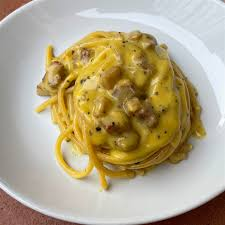

Carbonara

Authentic Spaghetti Carbonara
This is a classic Italian "fast" dish. Unlike lasagna, which is about slow-cooked layers, Carbonara is a technique-driven recipe that teaches you how to emulsify eggs and cheese into a creamy sauce without using any actual cream.
Short Description: A silky, rich Roman pasta dish made with just five ingredients: pasta, eggs, hard cheese, cured pork, and black pepper. It’s the ultimate comfort food that comes together in under 20 minutes.
Recipe (Serves 2):
- Ingredients:
- 225g Spaghetti
- 100g beef bacon, diced
- 1 whole egg and 2 egg yolks
- 60g Grated Pecorino Romano or Parmesan cheese
- Lots of freshly ground black pepper
- Instructions:
- Boil the pasta: Cook spaghetti in salted water until al dente. Reserve about ½ cup of the starchy pasta water before draining.
- Crisp the bacon: While the pasta cooks, fry the guanciale in a large pan over medium heat until the fat renders and the meat is crispy. Turn off the heat.
- Mix the base: In a bowl, whisk the eggs, cheese, and pepper until they form a thick paste.
- Assemble: Add the hot drained pasta to the pan with the pork fat. Toss to coat.
- Create the sauce: Pour the egg and cheese mixture over the pasta. Quickly toss and stir, adding a splash of reserved pasta water as needed. The residual heat will cook the eggs into a creamy sauce without scrambling them
Home